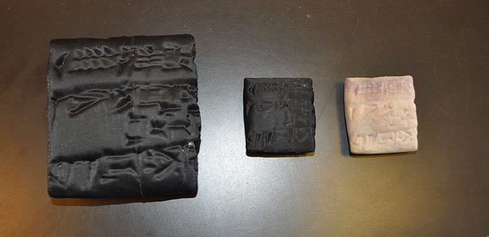
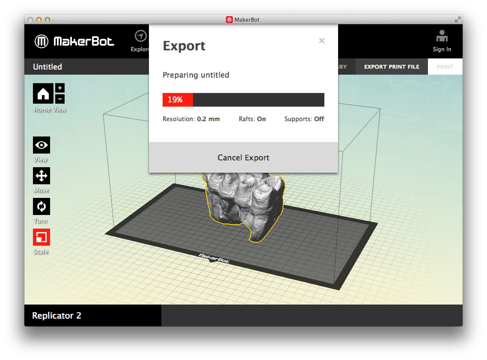

Workshop Goals
- Get participants acquainted with the tools, techniques, and terminology associated with 3D modeling and printing.
- Help you get comfortable enough to visit our Makerspace and try to make something!
What is 3D Printing?
3D Printing tools and methods (additive and subtractive) for generating physical objects from digital models.
Types of 3D Printing
Additive 3D Printing involves putting down layers of material (e.g. plastic filament) and building an object up.
Subtractive 3D Printing involves taking a solid piece of material (e.g. wood or acrylic) and cutting away pieces until the desired object is left.
Why Might I want to use 3D printing?
- Replacement parts (Our printer has a replacement part we printed.)
- Prototyping ideas (architectural concepts, models)
- Make toys or statues.
- Print 3D scans of objects you like in a museum.
- Fun
How have others used 3D printing?
Printed cuneform tablets

Additive Printers
The printer we have is an additive printer, a Makerbot Replicator 2. There are lots of other printers:
Additive Printers: Common Printer filaments
- PLA (Polylactic Acid) plastic - made from plant resources including sugars and starches, is biodegradable, less prone to warping when printing. Should not be used on a heated build platform.
- ABS (Acrylonitrile Butadiene Styrene) plastic - made from oils. Much sturdier than PLA, but requires higher temperatures to print. Requires a heated build platform. (LEGO bricks are made from ABS.)
The Process
- Find or create an object, and open that object into a 3D printer application, like Makerbot Desktop
- Change settings (size, layer height, infill, speed of print) as desired
- Export the model to a SD card, load into the printer, and start the print!
Find an Object on Thingiverse.com
Visit Thingiverse and find an object you'd like to print.
Download and Install Makerbot Desktop
Visit Makerbot Desktop and download and install the version appropriate for your computer. (We also have this installed on the Makerspace computer!)
Makerbot Desktop Interface: Summary
- In the main menu, choose
Devices > Type of Device and ensure you have the correct printer model selected. This ensures the interface loads the correct build space for your printer
- Once you have an object loaded, you can view, move, rotate, or scale the object as desired. Be sure not to move or scale the object beyond your printer's build space!
- When you've altered your model as desired, you can export the print file and save it to a SD card.
Makerbot Desktop Interface: Make a Print
- Resolution (presets) — How fine your print layers are. Lower resolution means faster print, but lower quality.
- Raft - Lays down a small grid of filament to help the print stick to the build platform.
- Supports — Scaffolding if your model has significant areas of overhang.
- Infill — How solid to make the print.
- Shells — Layers for outside wall of print. More shells = more sturdy
- Layer Height — How thick each layer of print will be. Lower = finer, but longer print
Export Print File
Once you're ready to print, select "Export Print File" to generate a file for the printer.

Troubleshooting

Print Failure
If a print fails, it's usually because of one or both of these reasons:
- The printer isn't set up correctly
- There's something wrong with the model
Calibrating: Printer Scripts
The Replicator 2 has several scripts to help you calibrate and alter your printer set-up, including:
- Loading and unloading filament
- Leveling the build platform
- Jog mode (to manually move the platform around)
Calibration: Preparing the build platform
- Run the leveling script to ensure the printer nozzle and the platform are the same distance apart at all points of movement.
- Use a small piece of paper, or a feeler gauge (0.1mm leaf) to test this distance. Turn knobs below the platform to adjust platform height accordingly.
During a print
- Watch for a few minutes to ensure plastic is being laid down consistently and reliably
- If the print isn't working well and you want to stop it, press the left arrow on the printer panel, and choose "Cancel Build"
- If the print is going fine, and you just want to stop it momentarily, press the left arrow on the printer panel, and choose "Pause".
- If the print is going fine, but you need to stop it for a longer period of time (e.g. overnight), press the left arrow, and choose "Cold Pause". This will cool down the nozzle, but allow you to Resume the print later
3D Modeling with Photogrammetry
What is Photogrammetry?
Photogrammetry involves tools and techniques that allow you to create 3-dimensional objects and spaces using 2-dimensional data and source material.
Why Use Photogrammetry?
Photogrammetry just requires a camera. Much more portable and accessible. Like desktop 3D printers, useful for rapid prototyping.
The Process
- Select an object. If possible, set it up in a way conducive for photogrammetry
- Take a bunch of pictures of the object, from a variety of angles.<./li>
- Upload photos to 123 Catch online application to generate model.
- Download model and clean up in 123D Catch or MeshMixer for viable 3D printing.
Shooting Tips
- Avoid shiny surfaces and lots of contrast
- You move around, not the object. Don't move the object.
- The object should fill the frame.
- Set the object in a place where you can move around it, and with plenty of other things going on in the background.
Shooting Tips
- Keep settings on the camera the same for all shots, including:
- ISO
- Shutter Speed
- Aperture (f-stop)
- Focus
- White balance
- Use a lower ISO setting if possible
- Use a higher aperture setting if possible
- Disable flash; set your object in diffused light as much as possible.
Shooting Tips
Take at least 60 photographs:
- One set at eye-level, with you moving in a circle around the object and stopping every 15-20 degrees to take a shot.(~20 total pics)
- Using the same process, point the camera down at the object at about a 45-degree angle.
- Take a shot straight down on the object
- Use remaining shots to take shots that get more detail. Move closer in to the object (don't zoom!)
Shooting Sequence

Make Your Model
Sign up for a free account at 123D App.

Thanks!